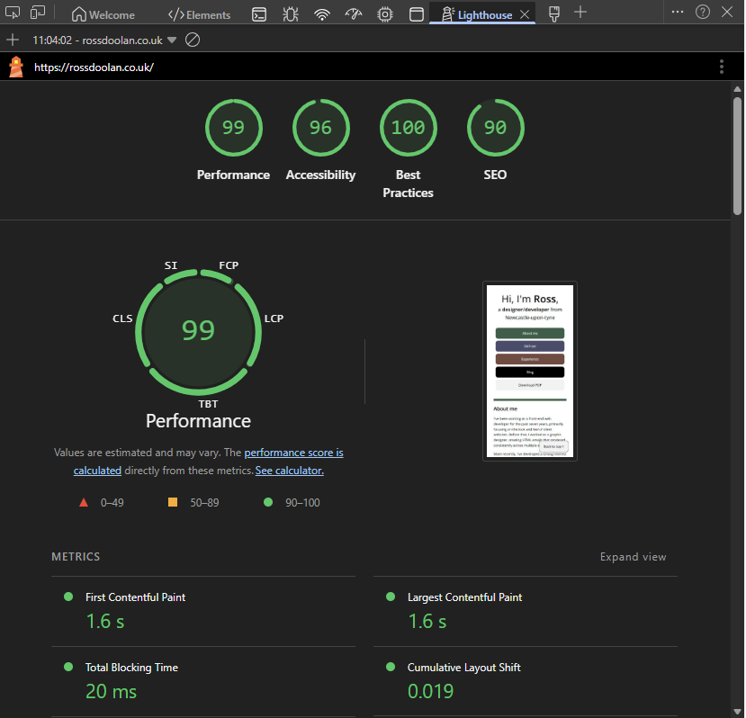
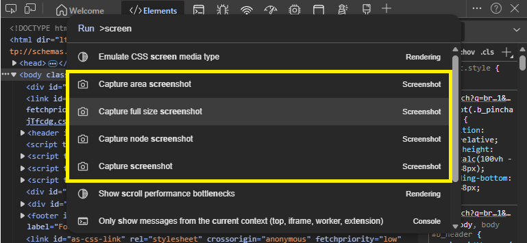
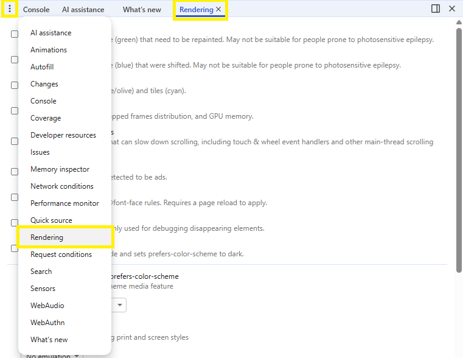
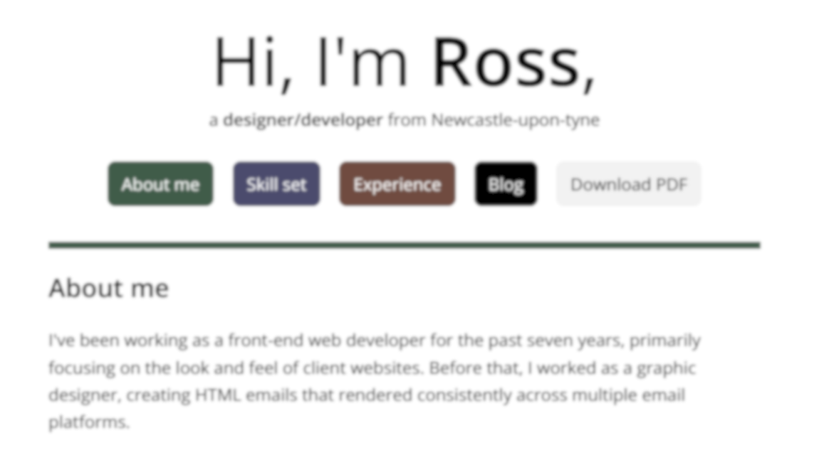

Browser DevTools for web dev and accessibility
To activate DevTools in your browser, press F12 on your keyboard.
Lighthouse
Lighthouse is baked into chromium-based browsers and allows you to run a lightweight accessibility audit on any web page.
This is a great way to quickly check your page and stay on top of your accessibility standards.

Screenshot options
Using the console in DevTools is a great way to take full page screenshots.
To do this open DevTools and click the 3 dots, select Run command and type screenshot. You will be shown the following options. Capture full size allows you to capture the entire page.

Render emulation
The rendering section in DevTools houses some excellent tools. By default the tab isn't always visible. In the bottom pane of your DevTools you can click the + (chrome) or 3 dots (edge) to enable it.

Print styles
Checking print styles is very situational, if you have a page you know users may wish to print, this is a great option for getting your styles right. Without having to press Print and check everytime you make a change.
Setting Emulate CSS media type to print in the rendering tab of DevTools allows you to see how your page will look when your @media print styles are applied.
Dark mode
DevTools also allows you to emulate dark mode. This is a great way to check your page looks good in dark mode without having to change your system settings.
If your CSS has dark mode styles you can use Emulate CSS media feature prefers-color-scheme, alternatively you can use the Emulate automatic dark mode checkbox.
Emulate vision deficiencies
One of my favourite of the rendering tools is the ability to emulate vision deficiencies. This allows you to see how your page looks to users with different vision impairments.
Along with blur you can test color blindness and reduced contrast modes.
